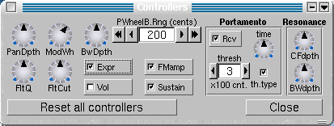

I assume that you are familiar with Midi controllers and NRPNs. The GM controllers received by ZynAddSubFX are:
1) Pitch bend
2) Modullation wheel (Controller number 1)
3) Volume (no. 7)
4) Pan (no. 10)
5) Expression (no. 11)
6) Sustain (no. 64)
7) Portamento On/Off (no. 65)
8) Filter Q (no. 71)
9) Filter cutoff (no. 74)
10) All sound off (no. 120)
11) Reset all controlers (no. 121)
12) All notes off (no. 123)
ZynAddSubFx has controllers that are not defined in GM.
1) Bandwidth (Sound control 6) (no. 75)
This increases or decreases the bandwidth
of instruments. The default parameter is 64.
2) Modulation amplitude (Sound control 7) (no. 76)
This decreases the amplitude of modulators on ADsynth.
The default parameter is 127.
3) Resonance Center Frequency (Sound control 8) (no. 77)
This changes the center frequency of the resonance.
4) Resonance Bandwidth (Sound control 9) (no. 78)
This changes the bandwidth of the resonance.
NRPN (Non Registered Parameters Number)
They can control all system and insertion effect parameters.For example,
you may change the reverb time when plaing to keyboard or flanger's lfo
frequency. You can disable the NRPN receiving by unselecting the "NRPN"
checkbox from the main window (near "Master Keyshift" counter).
The controls can be sent on any midi channel (the midi channels numbers
are ignored).
The parameters are:
- NRPN coarse (99 or 0x63)sets the system/insertion effects
(4 for system effects or 8 for insertion effects)
- NRPN fine (98 or 0x62)sets the number of the effect
(first effect is 0)
- Data entry coarse (6) sets the paremeter number of effect
to change(see below)
- Data entry fine (26) sets the parameter of the effect
You have to send NRPN coarse/fine before sending Data entry coarse/fine.
If the effect/parameter doesn't exists or is set to none, then the NRPN
is ignored.
Example(all values in this example are hex):
B0 63 08 // Select the insertion effects
B0 62 01 // Select the second effect (remember:
the first is 00 and not 01)
B0 06 00 // Select the effect parameter 00
B0 26 7F // Change the parameter of effect
to the value 7F (127)
Warning: Changing of some of the effect parameters produces clicks when sounds passes thru theese effects. I advise you to change only when the sound volume that passes thru the effect to be very low (or silence). Some parameters produce clicks when are changed very fast.
Here are the effects parameter number (for Data entry coarse). The parameters
that produces clicks are written in red color.
The parameter that produces clicks only when they are changed fast are
written in brown
color.
Most parameters has the range from 0 to 127. When parameters have another
range, it is written as [low..high].
Reverb
00 - Volume or Dry/WetEcho
01 - Pan
02 - Reverb Time
03 - Initial Delay
04 - Initial Delay Feedback
05, 06 - reserved
07 - Low Pass
08 - High Pass
09 - High Frequency Damping [64..127] 64=no damping
10 - Reverb Type [0..1] 0 - Random, 1 - Freeverb
11 - Room Size
00 - Volume or Dry/Wet
01 - Pan
02 - Delay
03 - Delay betweel left and right
04 - Left/Right Crossing
05 - Feedback
06 - High Frequency Damp
Chorus
00 - Volume or Dry/WetPhaser
01 - Pan
02 - LFO Frequency
03 - LFO Randomness
04 - LFO Type [0..1]
05 - LFO Stereo Difference
06 - LFO Depth
07 - Delay
08 - Feedback
09 - Left/Right Crossing
10 - reserved
11 - Mode [0..1] (0=add, 1=substract)
00 - Volume or Dry/WetAlienWah
01 - Pan
02 - LFO Frequency
03 - LFO Randomness
04 - LFO Type [0..1]
05 - LFO Stereo Difference
06 - LFO Depth
07 - Feedback
08 - Number of stages [0..11]
09 - Let/Right Crossing
10 - Mode [0..1] (0=add, 1=substract)
11 - Phase
00 - Volume or Dry/WetDistorsion
01 - Pan
02 - LFO Frequency
03 - LFO Randomness
04 - LFO Type [0..1]
05 - LFO Stereo Difference
06 - LFO Depth
07 - Feedback
08 - Delay [0..100]
09 - Left/Right Crossing
10 - Phase
00 - Volume or Dry/WetEQ
01 - Pan
02 - Left/Right Crossing
03 - Drive
04 - Level
05 - Type [0..11]
06 - Invert the signal (negate) [0..1]
07 - Low Pass
08 - High Pass
09 - Mode [0.1] (0=mono,1=stereo)
00 - GainAll other settings of the EQ are shown in a different way. The N represent the band ("B." setting in the UI) and the first band is 0 (and not 1), like is shown in the UI. Change the "N" with the band you like. If you want to change a band that doesn't exist, the NRPN will be ignored.
10+N*5 - Change the mode of the filter [0..9]
11+N*5 - Band's filter frequency
12+N*5 - Band's filter gain
13+N*5 - Band's filter Q (bandwith or resonance)
14+N*5 - reservedExample of eq setting:
Changing the gain of band's filter for the second (2-nd) band.
Because the bands are counted from 0, the second band is 1 => N=1. The formula is 12+N*5 => 12+1*5=17, so the number of effect parameter (for Data entry coarse) is 17.
You can change the how much the controlles changes the sounds or you
can disable/enable some controllers.

PanDpth -panning depth
ModWh - modullation wheel depth
BwDpth - Band width depth
FltQ - Filter Q (ressonance) depth
FltCut - Filter Cutoff frequency depth
Expr - enable/disable expression
Vol - enable/disable receiving volume controller
FMamp - enable/disable receiving Modulation Amplitude controller (76)
Sustain - enable/disable sustain pedal
PWheelB.Rng (cents) - Pitch Wheel Bend Range (cents; 100 cents=1 halftone)
Portamento - Portamento controls
- Rcv. - if the part
receives portamento On/Off (65) controller
- time - the duration
of the portamento
- thresh - the threshold
of the portamento. It represents the minimum or the maximum of halftones
(or hundried cents) in order to do the portamento. The difference is computed
between the last note and current note. The threshold refers to the frequencies
and not to MIDI notes (you should consider this if you use microtonal scales)..
- th.type - the threshold
type. Checked means that the portamento is done only the difference of
frequencies is above the threshold ("thresh"); not checked is for below
the threshold.
Resonance - CFdpth - resonance center controller depth
- BWdpth - resonance bandwidth controller depth